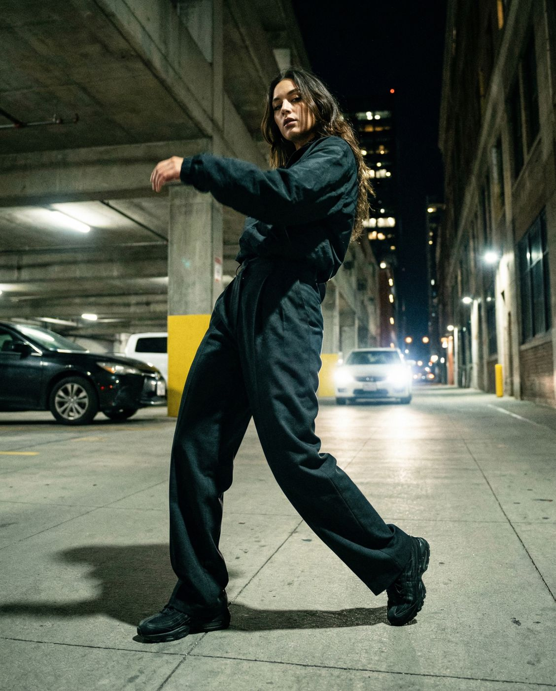
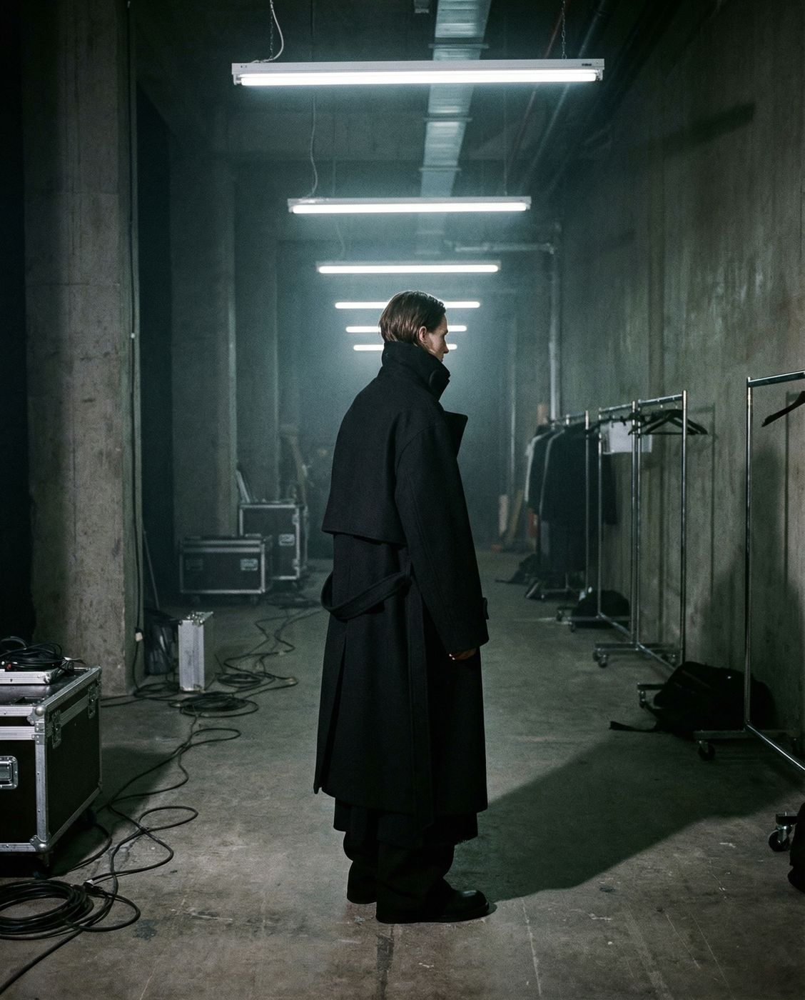
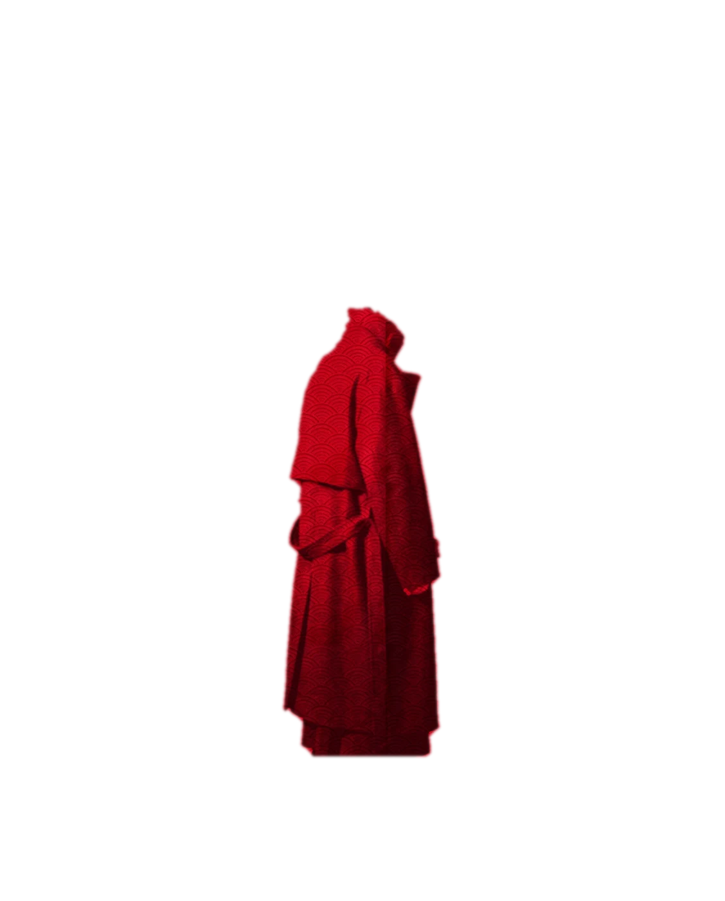
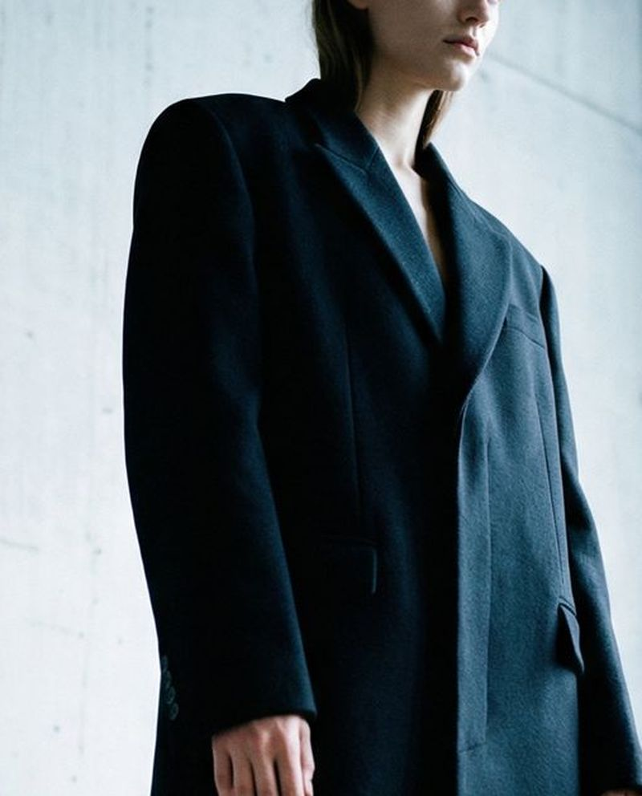
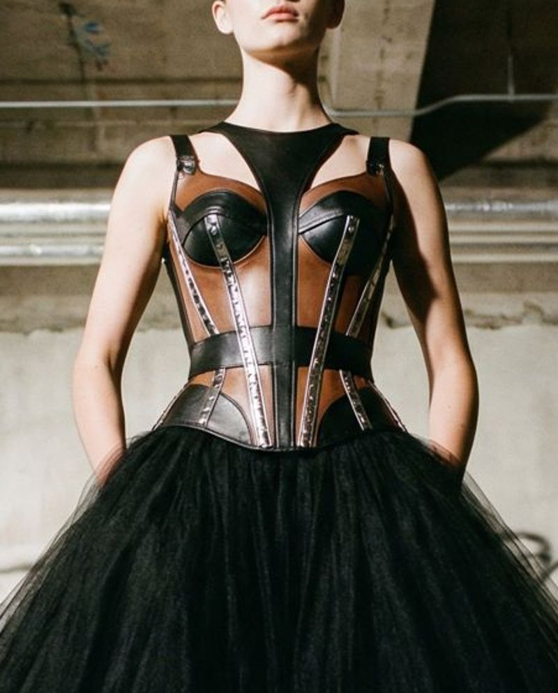
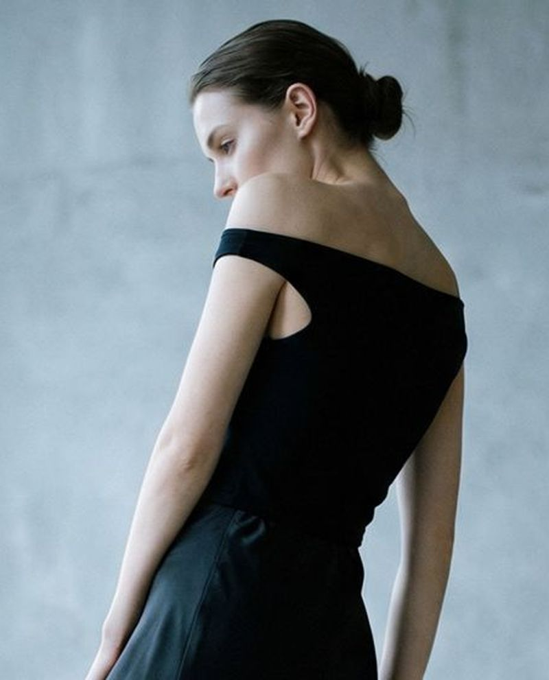
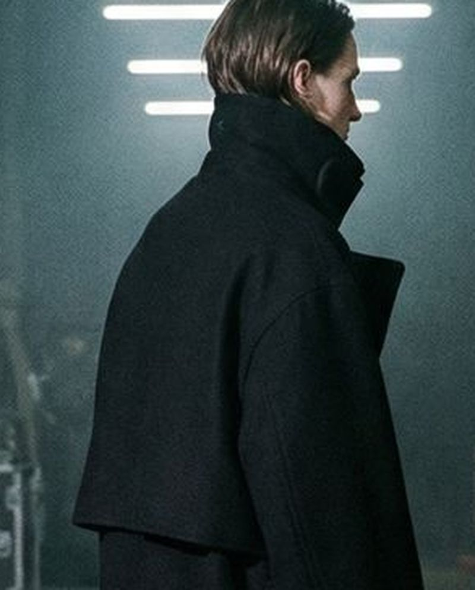
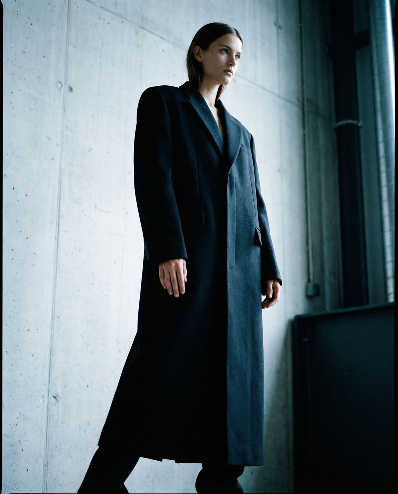
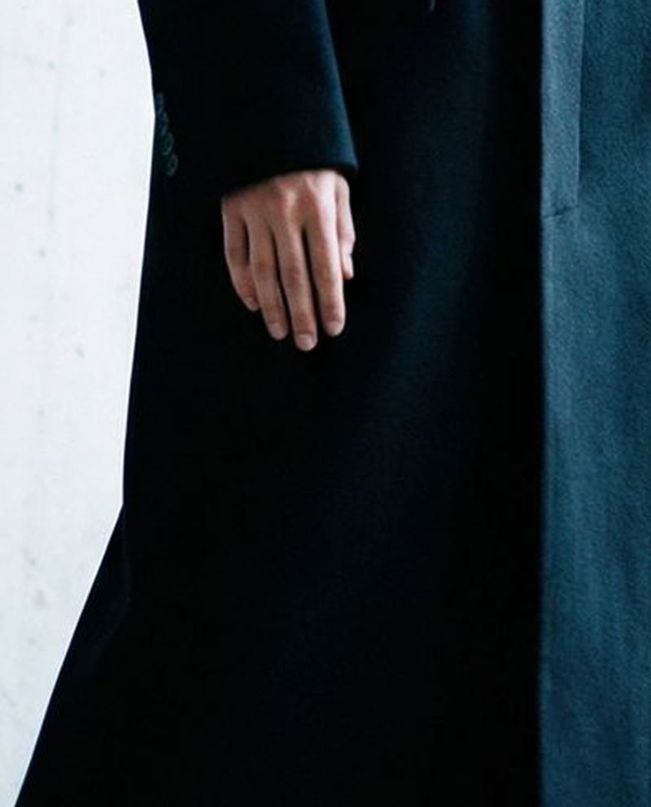
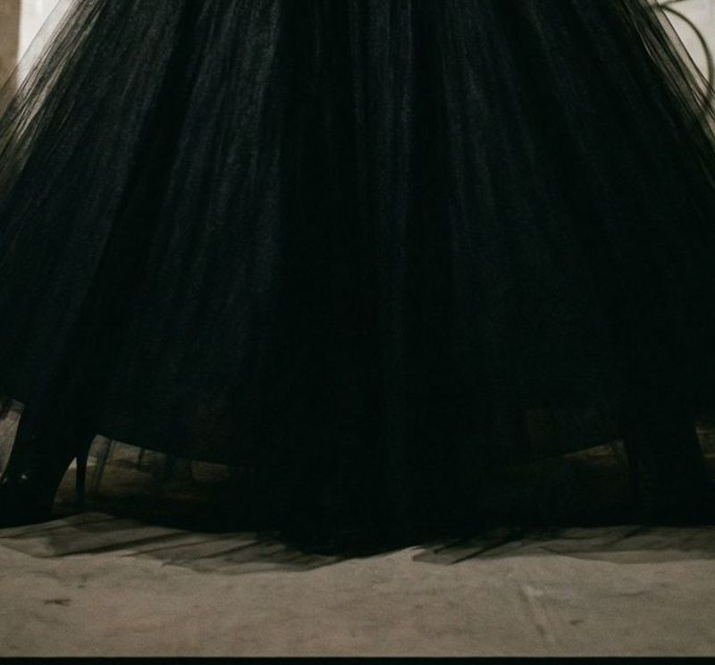

Тонко, но насквозь
400 лет назад в Эдо яркое было под запретом. Купцы надевали тёмные хаори, а изнутри пришивали шёлк: пейзажи, сцены из старых историй, целые картины. Увидеть их можно было лишь на миг, когда человек шёл и пола накидки отворачивалась.
- Релиз
- Drop 01 ENSO, 12.12.26
- На фото
- Пальто MORIN 02
- Состав
- шерсть 92%, кашемир 8%
- Тираж
- 120 шт, без повторов
Коллекция
Строгие силуэты, а рядом шёлк, фатин и металл. Красная печать на карточке — вещь из Drop 01 ENSO.


Drop 01 — первая коллекция
ENS
Энсо рисуют тушью одним движением, на одном выдохе, и никогда не исправляют. Так собрана первая коллекция: четыре вещи, 120 штук, без повторов. Лист ожидания откроет её на сутки раньше.

Заявка принята. Доступ к ENSO придёт за сутки до релиза.
Держит линию
Сначала линия: плечо, длина, пропорция. Потом то, что с ней спорит, — фатин, шёлк, кожа, металл. Спорят нарочно.

Крой
Плечо держит всё остальное

Фактура
Фатин рядом с кожей. Так и задумано

Посадка
Свободно, но без случайных складок
Свои люди
Фотографы, музыканты, стилисты — те, кто узнаёт своих по деталям. Рассказывают, в чём ходят и почему.

А., арт-директор
Смотреть образМ., музыкант
Смотреть образ
Л., стилист
Смотреть образБэкстейдж
Примерки, булавки, обрезки ткани. Как вещь становится собой, пока её никто не видит.

01Где кончается плечо — примерка пальто

02Фатин против кожи — первый тест
- 03
Красная печать — как её ставят
Оставь лишнее
Лишнее — это случайное. Шёлк и фатин здесь не случайно.
Вопросы
Это мужское или женское?
Основа — унисекс. Женские модели отмечены в карточке.
Можно примерить?
Магазин работает онлайн. Перед заказом можно написать в Telegram — подскажем размер и посадку.
Будут повторы?
Вещи из дропа не повторяются. Следующий дроп — другие вещи.
Как выбрать размер?
В карточке есть таблица размеров и замеры вещи. Сомнения — пишите в Telegram.
Как с доставкой?
Курьером или в пункт выдачи. Срок и цену видно при оформлении.
Можно вернуть?
Да, если вещь не подошла. Условия — в оферте.